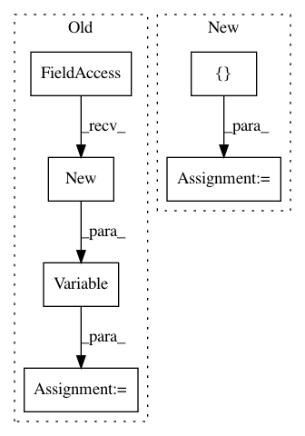

5750090fcd4a6718608c7357e3890f5b2a545ae0,layers/tacotron.py,Decoder,forward,#Decoder#Any#Any#,235
Before Change
// combine prev. model output and prev. real target
memory_input = torch.div(outputs[-1] + memory[t-1], 2.0)
// add a random noise
noise = torch.autograd.Variable(
memory_input.data.new(memory_input.size()).normal_(0.0, 0.5))
memory_input = memory_input + noise
// Prenet
processed_memory = self.prenet(memory_input)
After Change
outputs = []
alignments = []
stop_outputs = []
t = 0
memory_input = initial_memory
while True:
In pattern: SUPERPATTERN
Frequency: 4
Non-data size: 6
Instances
Project Name: mozilla/TTS
Commit Name: 5750090fcd4a6718608c7357e3890f5b2a545ae0
Time: 2018-03-22
Author: egolge@mozilla.com
File Name: layers/tacotron.py
Class Name: Decoder
Method Name: forward
Project Name: pytorch/examples
Commit Name: 645c7c386e62d2fb1d50f4621c1a52645a13869f
Time: 2018-04-24
Author: soumith@gmail.com
File Name: fast_neural_style/neural_style/utils.py
Class Name:
Method Name: normalize_batch
Project Name: ruotianluo/self-critical.pytorch
Commit Name: 68f970aca1f95cddbc1c5fc4e4c7e6b6bffb2293
Time: 2018-04-26
Author: rluo@ttic.edu
File Name: models/AttModel.py
Class Name: AttModel
Method Name: _sample_beam